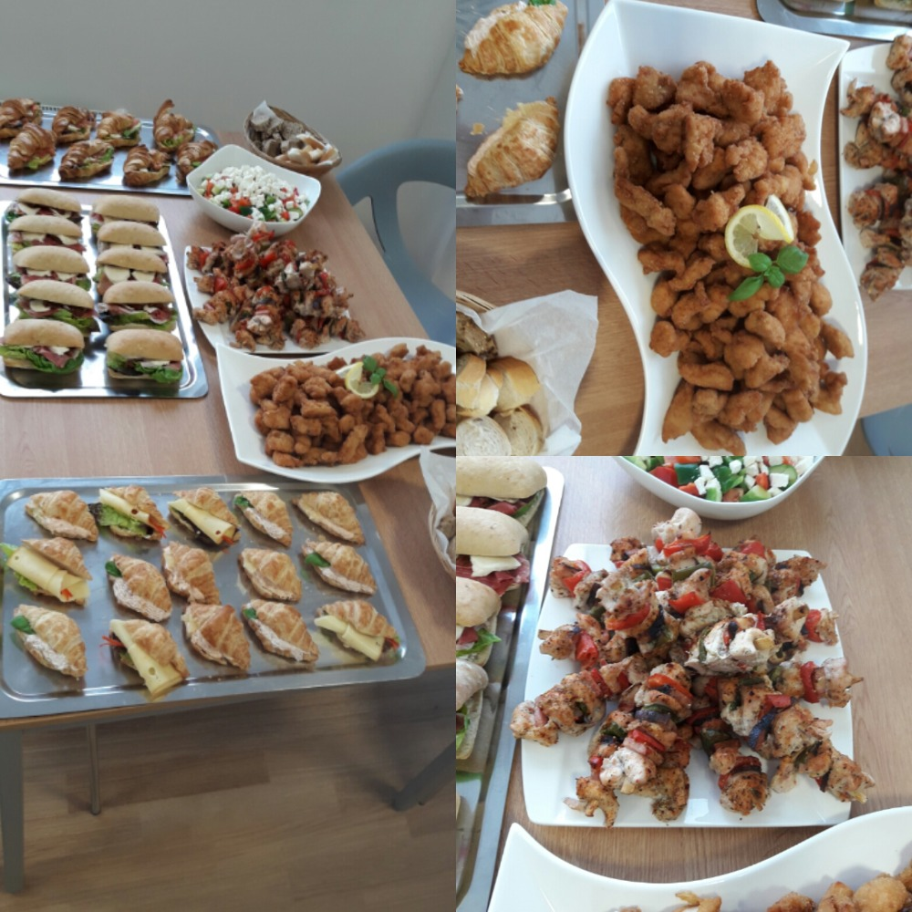

Jsme rodinná firma, kde otec vaří a matka vede a managuje firmu. Máme dloholeté zkušenosti ve vaření, zavážení jídel (pro jednotlivce i firmy), s kateringy, kantýnami, ale i s pořádáním svateb. Působíme hlavně v okresu Praha Východ, ale pro větší zakázky se mohou udělat výjimky. Soustředíme se výhradně na dlouhodobou spolupráci, než na jednorázové rozvozy. Našimi hlavními přednostmi jsou výrazně nízká cena a dobrá kvalita.
Služby
Jako naše služby můžeme nabídnout náš závoz, nebo zavážení na míru na zakázku. Náš závoz je určen pro jednotlivce, ale i pro firmy, klíčovou částí je, že se v něm vybírají jídla z našeho jídelního lístku. Zavážení na míru na zakázku je pro větší skupiny, tedy pro firmy, školy, či školky, které si většinou vybárají vlastní jídla, které chtějí abychom jim přivezli. Dříve jsme i pořádali svatby a provozovali kantýny, to ovšem dnes již neděláme.
Kateringy
Jedna z našich služeb pokrývá i kateringy. Můžete si nás objednat a my vám na míru přivezeme a zařídíme katering podle vašich specifikací. Většinou na kateringy používáme jednorázové nádobí. Jídlo pro katering přivážíme v termo bednách, které si také co nejdříve odvezeme, tedy pokud budete potřebovat nějakou chvíli jídlo z kateringu po přívozu skladovat, tak si to budete muset vyřídit sami.

Rozvoz jídla
V naší trase zavažíme každý všední den jídla, které si naši zákazníci objednávají přes jídelní lístky. Objednávat mohou jednotlivci, ale i vícero lidí. Z jídelního lístku si můžete objednat vícero jídel i vícero typů jídel. Jídlo vám přivezeme většinou před objedem v zavírací krabičce, nebo zataveném boxu. Typy jídel, které většinou nabízíme na každá den jsou polívka, salát a 3 hlavní jídla.